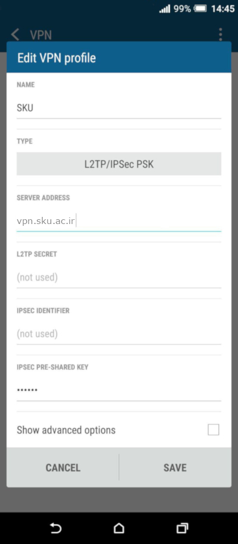
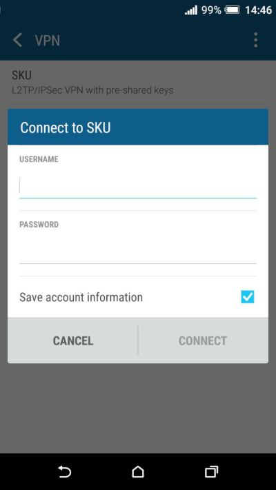

آموزش ساخت اتصال VPN در Android
- به VPN < More < Settings بروید و مطابق تصویر، یک اتصال VPN جدید اضافه کنید. این قسمت ممکن است با توجه به رابط کاربری دستگاه شما اندکی متفاوت باشد.
- مطابق تصویر زیر، اتصال VPN را تنظیم کنید. همهی بخشها را مطابق تصویر پر کنید.
در بخش IPSec Preshared Key مقدار 123654 را وارد کنید.

- اتصال مورد نظر با نامی که وارد کرده بودید (در تصویر فوق، SKU) ایجاد شده است.
- اتصال VPN را انتخاب کنید. در پنجرهی بازشده نام کاربری (Username) و رمز عبور (Password) خود را وارد و Connect را انتخاب کنید.
میتوانید با انتخاب Save account information اطلاعات را ذخیره کنید تا هر بار نیازی به وارد کردن آنها نباشد.
